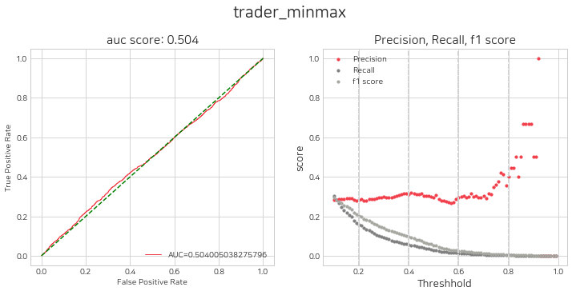
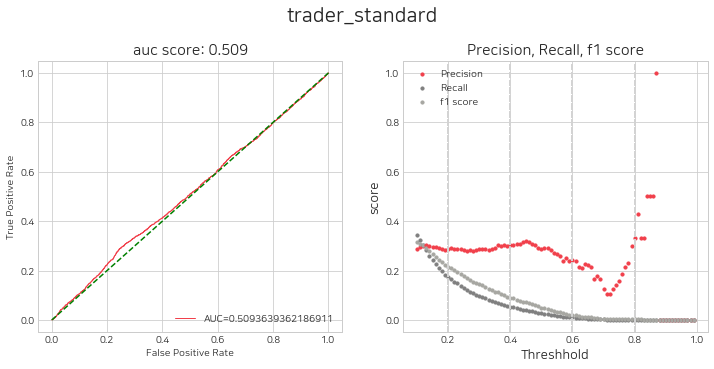
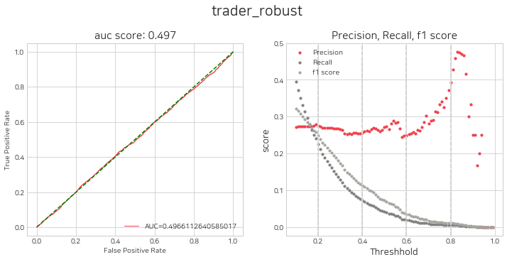
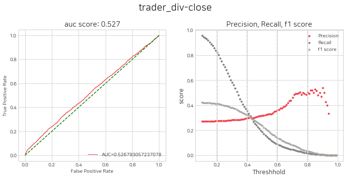
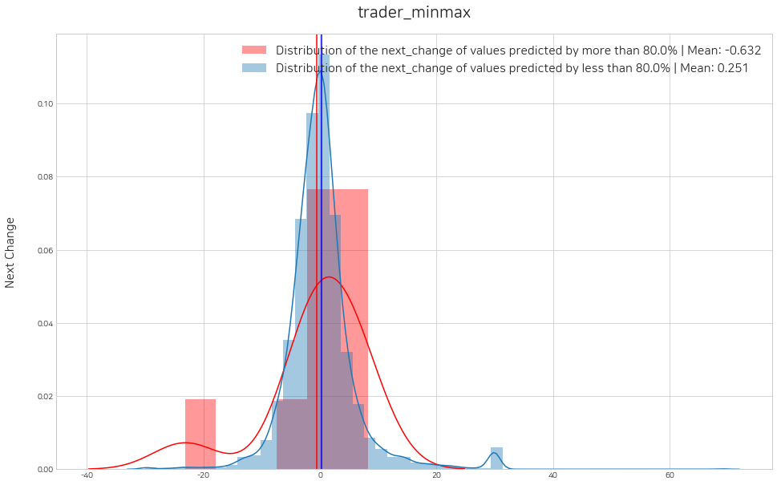
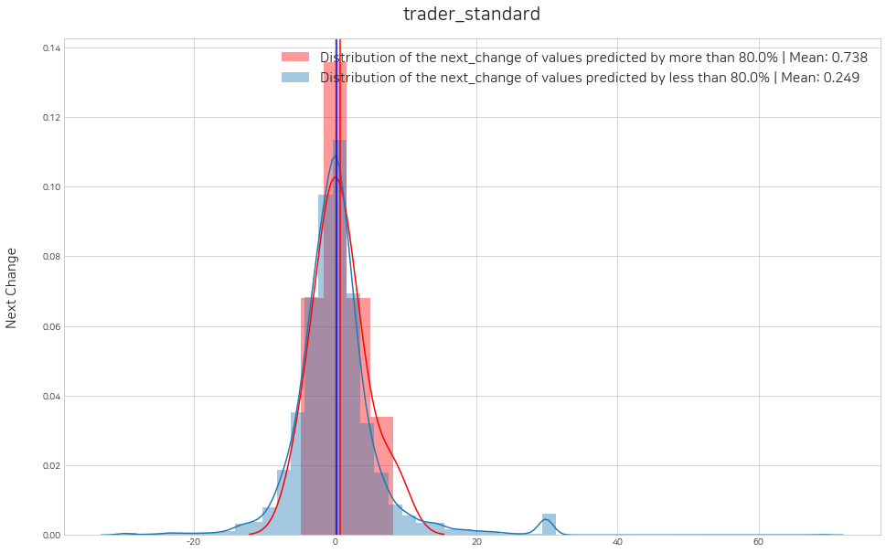
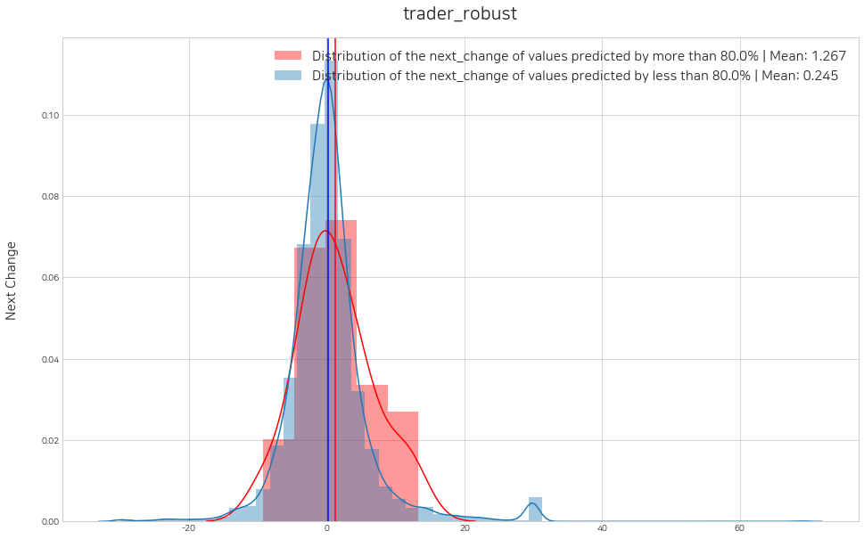
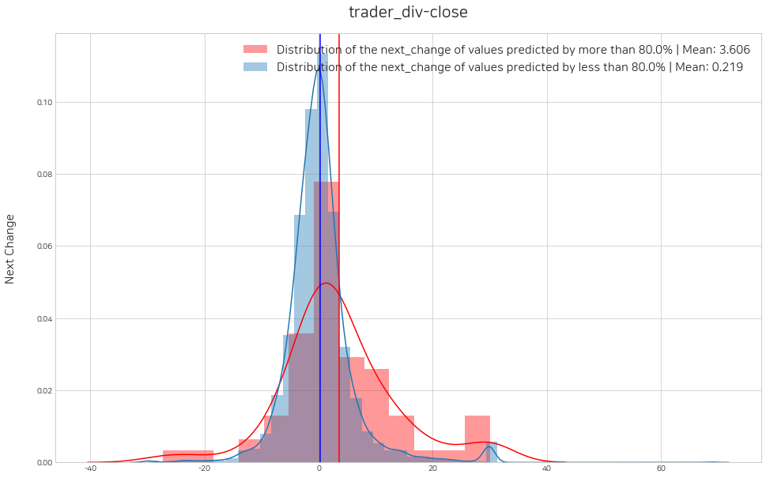
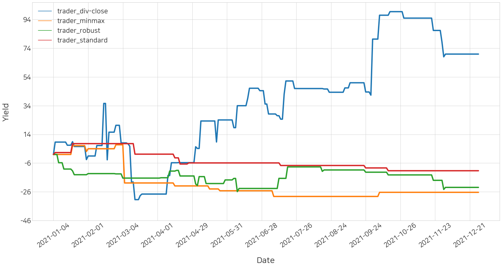

import pandas as pd
import stockait as sai본 글은 같은 트레이더의 조건일 때 네개의 다른 표준화 방법으로 전처리한 데이터셋 중 어떤 데이터셋의 성능이 가장 높게 나오는지 비교 실험을 수행하는 글입니다.
1. 데이터 수집
실험은 한국의 코스피 시장에서 500개의 종목만을 사용해서 주행하도록 하겠습니다.
lst_tickers = sai.get_tickers(markets=['KOSPI'])
print(len(lst_tickers), lst_tickers[:5])920 ['095570', '006840', '282330', '027410', '138930']raw_data = sai.load_data(date=['2016-01-01', '2021-12-31'], tickers=lst_tickers[:600])
print(raw_data.shape)
raw_data.head()100%|█████████████████████████████████████████████████████████████████████████████████████| 600/600 [00:38<00:00, 15.43it/s](821266, 7)| Code | Date | Open | High | Low | Close | Volume | |
|---|---|---|---|---|---|---|---|
| 0 | 000020 | 2016-01-04 | 8130 | 8150 | 7920 | 8140 | 281440 |
| 1 | 000020 | 2016-01-05 | 8040 | 8250 | 8000 | 8190 | 243179 |
| 2 | 000020 | 2016-01-06 | 8200 | 8590 | 8110 | 8550 | 609906 |
| 3 | 000020 | 2016-01-07 | 8470 | 8690 | 8190 | 8380 | 704752 |
| 4 | 000020 | 2016-01-08 | 8210 | 8900 | 8130 | 8770 | 802330 |
2. 데이터 전처리
1) 보조지표 추가
첫번째로, 보조지표를 추가합니다.
check_index = ['MA5', 'MA20', 'MA60','MA120',
'next_change','CMF','VPT','VMAP', "ADI",
'BHB','BLB','KCH','KCL','KCM','DCH','DCL','DCM','UI',
'SMA','EMA','WMA','MACD','VIneg','VIpos','TRIX','MI','CCI','DPO','KST','Ichimoku','ParabolicSAR','STC',
'RSI','SRSI','TSI','UO','SR','WR','AO','ROC','PPO','PVO']
check_df = sai.add_index(data=raw_data, index_list=check_index)
check_df100%|████████████████████████████████████████████████████████████████████████████████████████████████| 595/595 [09:39<00:00, 1.03it/s]| Code | Date | Open | High | Low | Close | Volume | Change | MA5 | MA20 | ... | RSI | SRSI | TSI | UO | SR | WR | AO | ROC | PPO | PVO | |
|---|---|---|---|---|---|---|---|---|---|---|---|---|---|---|---|---|---|---|---|---|---|
| 0 | 000020 | 2016-06-29 | 9850 | 10100 | 9700 | 9750 | 352292 | -0.001025 | 9544.0 | 10210.00 | ... | 45.763505 | 0.529126 | -8.116135 | 0.0 | 41.176471 | -58.823529 | -827.794118 | -3.940887 | -1.408719 | -11.019576 |
| 1 | 000020 | 2016-06-30 | 9850 | 10400 | 9760 | 10100 | 466248 | 0.035897 | 9618.0 | 10195.00 | ... | 51.232344 | 0.875363 | -6.553028 | 0.0 | 54.901961 | -45.098039 | -765.088235 | -2.415459 | -1.124410 | -9.119594 |
| 2 | 000020 | 2016-07-01 | 10200 | 10200 | 9960 | 9960 | 208228 | -0.013861 | 9794.0 | 10148.00 | ... | 49.099659 | 0.767924 | -5.911240 | 0.0 | 49.411765 | -50.588235 | -624.205882 | -4.230769 | -1.001426 | -12.558989 |
| 3 | 000020 | 2016-07-04 | 10000 | 10400 | 9900 | 10400 | 275210 | 0.044177 | 9994.0 | 10135.50 | ... | 55.385557 | 1.000000 | -3.312304 | 0.0 | 66.666667 | -33.333333 | -427.205882 | -0.952381 | -0.541344 | -13.975141 |
| 4 | 000020 | 2016-07-05 | 10400 | 10450 | 10200 | 10350 | 156010 | -0.004808 | 10112.0 | 10118.00 | ... | 54.560981 | 0.961700 | -1.483696 | 0.0 | 64.705882 | -35.294118 | -266.529412 | 1.970443 | -0.216142 | -17.711174 |
| ... | ... | ... | ... | ... | ... | ... | ... | ... | ... | ... | ... | ... | ... | ... | ... | ... | ... | ... | ... | ... | ... |
| 750398 | 5307W1 | 2021-12-23 | 3420 | 3480 | 3370 | 3425 | 391929 | 0.007353 | 3440.0 | 3535.00 | ... | 40.390231 | 0.159714 | -8.758815 | 0.0 | 20.000000 | -80.000000 | -126.044118 | -5.647383 | -0.810232 | -11.033540 |
| 750399 | 5307W1 | 2021-12-24 | 3465 | 3520 | 3420 | 3500 | 313474 | 0.021898 | 3438.0 | 3529.50 | ... | 47.968313 | 0.589811 | -8.179822 | 0.0 | 43.076923 | -56.923077 | -138.058824 | -3.047091 | -0.740535 | -10.762865 |
| 750400 | 5307W1 | 2021-12-27 | 3515 | 3515 | 3465 | 3475 | 265569 | -0.007143 | 3446.0 | 3527.25 | ... | 45.874782 | 0.494226 | -8.285385 | 0.0 | 35.384615 | -64.615385 | -134.838235 | -4.005525 | -0.734518 | -11.598254 |
| 750401 | 5307W1 | 2021-12-28 | 3500 | 3520 | 3455 | 3515 | 359215 | 0.011511 | 3463.0 | 3532.75 | ... | 49.660421 | 0.719680 | -7.274530 | 0.0 | 52.542373 | -47.457627 | -114.720588 | -2.361111 | -0.630225 | -9.883604 |
| 750402 | 5307W1 | 2021-12-29 | 3520 | 3650 | 3490 | 3615 | 436463 | 0.02845 | 3506.0 | 3539.75 | ... | 57.637528 | 1.000000 | -3.768305 | 0.0 | 86.440678 | -13.559322 | -86.279412 | -0.138122 | -0.313929 | -6.618431 |
750403 rows × 50 columns
2) 데이터 표준화
다음으로 stockait에서 제공하는 네가지의 표준화 방법을 사용하여 데이터를 표준화 합니다.
minmax
scaled_minmax = sai.scaling(data=check_df, scaler_type="minmax")
scaled_minmax.head()100%|████████████████████████████████████████████████████████████████████████████████████████████████| 586/586 [00:58<00:00, 10.09it/s]| Code | Date | Open | High | Low | Close | Volume | Change | MA5 | MA20 | ... | RSI | SRSI | TSI | UO | SR | WR | AO | ROC | PPO | PVO | |
|---|---|---|---|---|---|---|---|---|---|---|---|---|---|---|---|---|---|---|---|---|---|
| 0 | 000020 | 2016-06-29 | 0.194499 | 0.168374 | 0.201232 | 9750 | 352292 | -0.001025 | 0.187465 | 0.222265 | ... | 45.763505 | 0.529126 | -8.116135 | 0.0 | 41.176471 | -58.823529 | -827.794118 | -3.940887 | -1.408719 | -11.019576 |
| 1 | 000020 | 2016-06-30 | 0.194499 | 0.17862 | 0.203696 | 10100 | 466248 | 0.035897 | 0.19065 | 0.221465 | ... | 51.232344 | 0.875363 | -6.553028 | 0.0 | 54.901961 | -45.098039 | -765.088235 | -2.415459 | -1.124410 | -9.119594 |
| 2 | 000020 | 2016-07-01 | 0.208251 | 0.17179 | 0.21191 | 9960 | 208228 | -0.013861 | 0.198227 | 0.218958 | ... | 49.099659 | 0.767924 | -5.911240 | 0.0 | 49.411765 | -50.588235 | -624.205882 | -4.230769 | -1.001426 | -12.558989 |
| 3 | 000020 | 2016-07-04 | 0.200393 | 0.17862 | 0.209446 | 10400 | 275210 | 0.044177 | 0.206836 | 0.218291 | ... | 55.385557 | 1.000000 | -3.312304 | 0.0 | 66.666667 | -33.333333 | -427.205882 | -0.952381 | -0.541344 | -13.975141 |
| 4 | 000020 | 2016-07-05 | 0.21611 | 0.180328 | 0.221766 | 10350 | 156010 | -0.004808 | 0.211915 | 0.217358 | ... | 54.560981 | 0.961700 | -1.483696 | 0.0 | 64.705882 | -35.294118 | -266.529412 | 1.970443 | -0.216142 | -17.711174 |
5 rows × 50 columns
standard
scaled_standard = sai.scaling(data=check_df, scaler_type="standard")
scaled_standard.head()100%|████████████████████████████████████████████████████████████████████████████████████████████████| 586/586 [00:26<00:00, 21.84it/s]| Code | Date | Open | High | Low | Close | Volume | Change | MA5 | MA20 | ... | RSI | SRSI | TSI | UO | SR | WR | AO | ROC | PPO | PVO | |
|---|---|---|---|---|---|---|---|---|---|---|---|---|---|---|---|---|---|---|---|---|---|
| 0 | 000020 | 2016-06-29 | -0.426667 | -0.40741 | -0.422378 | 9750 | 352292 | -0.001025 | -0.497811 | -0.336067 | ... | 45.763505 | 0.529126 | -8.116135 | 0.0 | 41.176471 | -58.823529 | -827.794118 | -3.940887 | -1.408719 | -11.019576 |
| 1 | 000020 | 2016-06-30 | -0.426667 | -0.339931 | -0.407372 | 10100 | 466248 | 0.035897 | -0.479964 | -0.339741 | ... | 51.232344 | 0.875363 | -6.553028 | 0.0 | 54.901961 | -45.098039 | -765.088235 | -2.415459 | -1.124410 | -9.119594 |
| 2 | 000020 | 2016-07-01 | -0.343357 | -0.384917 | -0.357352 | 9960 | 208228 | -0.013861 | -0.437518 | -0.351253 | ... | 49.099659 | 0.767924 | -5.911240 | 0.0 | 49.411765 | -50.588235 | -624.205882 | -4.230769 | -1.001426 | -12.558989 |
| 3 | 000020 | 2016-07-04 | -0.390963 | -0.339931 | -0.372358 | 10400 | 275210 | 0.044177 | -0.389284 | -0.354314 | ... | 55.385557 | 1.000000 | -3.312304 | 0.0 | 66.666667 | -33.333333 | -427.205882 | -0.952381 | -0.541344 | -13.975141 |
| 4 | 000020 | 2016-07-05 | -0.295751 | -0.328684 | -0.297327 | 10350 | 156010 | -0.004808 | -0.360826 | -0.358600 | ... | 54.560981 | 0.961700 | -1.483696 | 0.0 | 64.705882 | -35.294118 | -266.529412 | 1.970443 | -0.216142 | -17.711174 |
5 rows × 50 columns
robust
scaled_robust = sai.scaling(data=check_df, scaler_type="robust")
scaled_robust.head()100%|████████████████████████████████████████████████████████████████████████████████████████████████| 586/586 [00:44<00:00, 13.26it/s]| Code | Date | Open | High | Low | Close | Volume | Change | MA5 | MA20 | ... | RSI | SRSI | TSI | UO | SR | WR | AO | ROC | PPO | PVO | |
|---|---|---|---|---|---|---|---|---|---|---|---|---|---|---|---|---|---|---|---|---|---|
| 0 | 000020 | 2016-06-29 | 0.016653 | 0.060905 | -0.009898 | 9750 | 352292 | -0.001025 | -0.037510 | 0.080375 | ... | 45.763505 | 0.529126 | -8.116135 | 0.0 | 41.176471 | -58.823529 | -827.794118 | -3.940887 | -1.408719 | -11.019576 |
| 1 | 000020 | 2016-06-30 | 0.016653 | 0.114006 | 0.000723 | 10100 | 466248 | 0.035897 | -0.024412 | 0.077720 | ... | 51.232344 | 0.875363 | -6.553028 | 0.0 | 54.901961 | -45.098039 | -765.088235 | -2.415459 | -1.124410 | -9.119594 |
| 2 | 000020 | 2016-07-01 | 0.078605 | 0.078605 | 0.036124 | 9960 | 208228 | -0.013861 | 0.006741 | 0.069401 | ... | 49.099659 | 0.767924 | -5.911240 | 0.0 | 49.411765 | -50.588235 | -624.205882 | -4.230769 | -1.001426 | -12.558989 |
| 3 | 000020 | 2016-07-04 | 0.043204 | 0.114006 | 0.025504 | 10400 | 275210 | 0.044177 | 0.042142 | 0.067188 | ... | 55.385557 | 1.000000 | -3.312304 | 0.0 | 66.666667 | -33.333333 | -427.205882 | -0.952381 | -0.541344 | -13.975141 |
| 4 | 000020 | 2016-07-05 | 0.114006 | 0.122857 | 0.078605 | 10350 | 156010 | -0.004808 | 0.063029 | 0.064091 | ... | 54.560981 | 0.961700 | -1.483696 | 0.0 | 64.705882 | -35.294118 | -266.529412 | 1.970443 | -0.216142 | -17.711174 |
5 rows × 50 columns
div-close
scaled_div_close = sai.scaling(data=check_df, scaler_type="div-close")
scaled_div_close.head()100%|████████████████████████████████████████████████████████████████████████████████████████████████| 586/586 [00:26<00:00, 21.94it/s]| Code | Date | Open | High | Low | Close | Volume | Change | MA5 | MA20 | ... | RSI | SRSI | TSI | UO | SR | WR | AO | ROC | PPO | PVO | |
|---|---|---|---|---|---|---|---|---|---|---|---|---|---|---|---|---|---|---|---|---|---|
| 0 | 000020 | 2016-06-29 | 1.010256 | 1.035897 | 0.994872 | 9750 | 352292 | -0.001025 | 0.978872 | 1.047179 | ... | 45.763505 | 0.529126 | -8.116135 | 0.0 | 41.176471 | -58.823529 | -827.794118 | -3.940887 | -1.408719 | -11.019576 |
| 1 | 000020 | 2016-06-30 | 1.010256 | 1.066667 | 1.001026 | 10100 | 466248 | 0.035897 | 0.986462 | 1.045641 | ... | 51.232344 | 0.875363 | -6.553028 | 0.0 | 54.901961 | -45.098039 | -765.088235 | -2.415459 | -1.124410 | -9.119594 |
| 2 | 000020 | 2016-07-01 | 1.009901 | 1.009901 | 0.986139 | 9960 | 208228 | -0.013861 | 0.969703 | 1.004752 | ... | 49.099659 | 0.767924 | -5.911240 | 0.0 | 49.411765 | -50.588235 | -624.205882 | -4.230769 | -1.001426 | -12.558989 |
| 3 | 000020 | 2016-07-04 | 1.004016 | 1.044177 | 0.993976 | 10400 | 275210 | 0.044177 | 1.003414 | 1.017620 | ... | 55.385557 | 1.000000 | -3.312304 | 0.0 | 66.666667 | -33.333333 | -427.205882 | -0.952381 | -0.541344 | -13.975141 |
| 4 | 000020 | 2016-07-05 | 1.0 | 1.004808 | 0.980769 | 10350 | 156010 | -0.004808 | 0.972308 | 0.972885 | ... | 54.560981 | 0.961700 | -1.483696 | 0.0 | 64.705882 | -35.294118 | -266.529412 | 1.970443 | -0.216142 | -17.711174 |
5 rows × 50 columns
3) 시계열 데이터 변환
하나의 행에 10일치(D-9 ~ D0)의 데이터가 담기도록 데이터셋을 변환합니다.
# original dataset
df_time_series = sai.time_series(check_df, day=10)
# scaled dataset
df_time_series_minmax = sai.time_series(scaled_minmax, day=10)
df_time_series_standard = sai.time_series(scaled_standard, day=10)
df_time_series_robust = sai.time_series(scaled_robust, day=10)
df_time_series_div_close = sai.time_series(scaled_div_close, day=10)100%|████████████████████████████████████████████████████████████████████████████████████████████████| 586/586 [02:19<00:00, 4.21it/s]
100%|████████████████████████████████████████████████████████████████████████████████████████████████| 586/586 [02:25<00:00, 4.04it/s]
100%|████████████████████████████████████████████████████████████████████████████████████████████████| 586/586 [02:18<00:00, 4.22it/s]
100%|████████████████████████████████████████████████████████████████████████████████████████████████| 586/586 [02:18<00:00, 4.23it/s]
100%|████████████████████████████████████████████████████████████████████████████████████████████████| 586/586 [02:18<00:00, 4.23it/s]
3. 트레이더 정의
lst_trader = []from lightgbm import LGBMClassifier
# conditional_buyer: Object that determines acquisition based on data filtering conditions
b1_lg = sai.ConditionalBuyer()
def sampling1(df): # Create a conditional function
condition1 = (-0.3 <= df.D0_Change) & (df.D0_Change <= 0.3) # Remove exceptions that exceed upper and lower limits
condition2 = (df.D0_Close * df.D0_Volume) >= 1000000000 # condition 1: Transaction amount of more than 1 billion won
condition3 = (-0.05 >= df.D0_Change) | (0.05 <= df.D0_Change) # condition 2: Today's stock price change rate is more than 5%
condition = condition1 & condition2 & condition3
return condition
b1_lg.condition = sampling1 # Define the condition function directly (sampling1) and store it in the condition property
# machinelearning_buyer: Object that determines acquisition by machine learning model
b2_lg = sai.MachinelearningBuyer()
# Save user-defined models to algorithm properties
scale_pos_weight = round(72/28 , 2)
params = { 'random_state' : 42,
'scale_pos_weight' : scale_pos_weight,
'learning_rate' : 0.1,
'num_iterations' : 1000,
'max_depth' : 4,
'n_jobs' : 30,
'boost_from_average' : False,
'objective' : 'binary' }
b2_lg.algorithm = LGBMClassifier( **params )
# SubSeller: Object that determines selling all of the following days
sell_all = sai.SubSeller() 트레이더는 같은 조건으로 생성되어야 하므로 정의를 한 번 해주고, 트레이더를 구분하기 위한 이름만 다르게 하여 lst_trader에 넣어줍니다.
trader_name = ["trader_minmax", "trader_standard", "trader_robust", "trader_div-close"]
for name in trader_name:
trader = sai.Trader()
trader.name = name # Trader's name
trader.label = 'class&0.02' # Set the Trader dependent variable (do not set if it is regression analysis)
trader.buyer = sai.Buyer([b1_lg, b2_lg]) # [ conditional buyer, machinelearning buyer ]
trader.seller = sai.Seller(sell_all)
lst_trader.append(trader)
4. 트레이더 (모델) 학습 및 평가
1) 트레이더 객체에 데이터셋 저장
df_time_series = df_time_series[~(df_time_series["Code"].isin(["33626K", "33637k", '33637K']))]
df_time_series_minmax = df_time_series_minmax[~(df_time_series_minmax["Code"].isin(["33626K", "33637k", '33637K']))]
df_time_series_standard = df_time_series_standard[~(df_time_series_standard["Code"].isin(["33626K", "33637k", '33637K']))]
df_time_series_robust = df_time_series_robust[~(df_time_series_robust["Code"].isin(["33626K", "33637k", '33637K']))]
df_time_series_div_close = df_time_series_div_close[~(df_time_series_div_close["Code"].isin(["33626K", "33637k", '33637K']))]
# train, test dataset split
train_data = df_time_series[(df_time_series['Date'] >= '2017-01-01') & (df_time_series['Date'] <= '2020-12-31')]
test_data = df_time_series[(df_time_series['Date'] >= '2021-01-01') & (df_time_series['Date'] <= '2021-12-31')]
# train, test dataset split (scaled)
train_data_minmax = df_time_series_minmax[(df_time_series_minmax['Date'] >= '2017-01-01') & (df_time_series_minmax['Date'] <= '2020-12-31')]
test_data_minmax = df_time_series_minmax[(df_time_series_minmax['Date'] >= '2021-01-01') & (df_time_series_minmax['Date'] <= '2021-12-31')]
train_data_standard = df_time_series_standard[(df_time_series_standard['Date'] >= '2017-01-01') & (df_time_series_standard['Date'] <= '2020-12-31')]
test_data_standard = df_time_series_standard[(df_time_series_standard['Date'] >= '2021-01-01') & (df_time_series_standard['Date'] <= '2021-12-31')]
train_data_robust = df_time_series_robust[(df_time_series_robust['Date'] >= '2017-01-01') & (df_time_series_robust['Date'] <= '2020-12-31')]
test_data_robust = df_time_series_robust[(df_time_series_robust['Date'] >= '2021-01-01') & (df_time_series_robust['Date'] <= '2021-12-31')]
train_data_div_close = df_time_series_div_close[(df_time_series_div_close['Date'] >= '2017-01-01') & (df_time_series_div_close['Date'] <= '2020-12-31')]
test_data_div_close = df_time_series_div_close[(df_time_series_div_close['Date'] >= '2021-01-01') & (df_time_series_div_close['Date'] <= '2021-12-31')]
lst_dataset_scaled = [[train_data_minmax, test_data_minmax],
[train_data_standard, test_data_standard],
[train_data_robust, test_data_robust],
[train_data_div_close, test_data_div_close]]
for i in range(4):
lst_trader_one = [lst_trader[i]]
sai.save_dataset(lst_trader_one, train_data, test_data, lst_dataset_scaled[i][0], lst_dataset_scaled[i][1])== trader_minmax ==
== train_code_date: (542390, 2), test_code_date: (139968, 2) ==
== trainX: (542390, 470), testX: (139968, 470) ==
== trainX_scaled: (542390, 470), testX_scaled: (139968, 470) ==
== trainY: (542390,), testY: (139968,) ==
== trainY_classification: (542390,), testY_classification: (139968,) ==
== trader_standard ==
== train_code_date: (542390, 2), test_code_date: (139968, 2) ==
== trainX: (542390, 470), testX: (139968, 470) ==
== trainX_scaled: (542390, 470), testX_scaled: (139968, 470) ==
== trainY: (542390,), testY: (139968,) ==
== trainY_classification: (542390,), testY_classification: (139968,) ==
== trader_robust ==
== train_code_date: (542390, 2), test_code_date: (139968, 2) ==
== trainX: (542390, 470), testX: (139968, 470) ==
== trainX_scaled: (542390, 470), testX_scaled: (139968, 470) ==
== trainY: (542390,), testY: (139968,) ==
== trainY_classification: (542390,), testY_classification: (139968,) ==
== trader_div-close ==
== train_code_date: (542390, 2), test_code_date: (139968, 2) ==
== trainX: (542390, 470), testX: (139968, 470) ==
== trainX_scaled: (542390, 470), testX_scaled: (139968, 470) ==
== trainY: (542390,), testY: (139968,) ==
== trainY_classification: (542390,), testY_classification: (139968,) ==
2) 모델 학습
sai.trader_train(lst_trader) == trader_minmax Model Fitting Completed ==
== trader_standard Model Fitting Completed ==
== trader_robust Model Fitting Completed ==
== trader_div-close Model Fitting Completed ==3) 모델 평가 및 임계값 설정
모델 평가
sai.get_eval_by_threshold(lst_trader)



임계값 설정
sai.set_threshold(lst_trader, lst_threshold=[0.8, 0.8, 0.8, 0.8], histogram=True)Error: local variable 'threshold' referenced before assignment<Figure size 1152x720 with 0 Axes><Figure size 1152x720 with 0 Axes>
<Figure size 1152x720 with 0 Axes><Figure size 1152x720 with 0 Axes>
<Figure size 1152x720 with 0 Axes><Figure size 1152x720 with 0 Axes>
<Figure size 1152x720 with 0 Axes><Figure size 1152x720 with 0 Axes>
4. BackTesting
1) 매매일지 작성
df_signal_all = sai.decision(lst_trader, dtype='test')
df_signal_all139968it [00:03, 36309.18it/s]
139968it [00:03, 35560.93it/s]== trader_minmax completed ==139968it [00:03, 36491.79it/s]
139968it [00:03, 36350.87it/s]== trader_standard completed ==139968it [00:03, 35696.38it/s]
139968it [00:03, 36391.64it/s]== trader_robust completed ==139968it [00:03, 36208.76it/s]
139968it [00:03, 35618.92it/s]== trader_div-close completed ==| Trader_id | Date | Code | +(buy)/-(sell) | Amount | Close | |
|---|---|---|---|---|---|---|
| 0 | trader_minmax | 2021-01-04 | 000020 | + | 0.0 | 19100.0 |
| 1 | trader_minmax | 2021-01-05 | 000020 | + | 0.0 | 19400.0 |
| 2 | trader_minmax | 2021-01-06 | 000020 | + | 0.0 | 19700.0 |
| 3 | trader_minmax | 2021-01-07 | 000020 | + | 0.0 | 19700.0 |
| 4 | trader_minmax | 2021-01-08 | 000020 | + | 0.0 | 19100.0 |
| ... | ... | ... | ... | ... | ... | ... |
| 139963 | trader_div-close | 2021-12-22 | 5307W1 | - | 1.0 | 3400.0 |
| 139964 | trader_div-close | 2021-12-23 | 5307W1 | - | 1.0 | 3425.0 |
| 139965 | trader_div-close | 2021-12-24 | 5307W1 | - | 1.0 | 3500.0 |
| 139966 | trader_div-close | 2021-12-27 | 5307W1 | - | 1.0 | 3475.0 |
| 139967 | trader_div-close | 2021-12-28 | 5307W1 | - | 1.0 | 3515.0 |
1119744 rows × 6 columns
2) Simulation: 수익률 계산
df_history_all = sai.simulation(df_signal_all, init_budget=10000000, init_stock={}, fee=0.01)
df_history_all100%|███████████████████████████████████████████████████████████████████████████████████████████████▌| 245/246 [00:10<00:00, 24.31it/s]== trader_div-close completed ==100%|███████████████████████████████████████████████████████████████████████████████████████████████▌| 245/246 [00:10<00:00, 24.29it/s]== trader_minmax completed ==100%|███████████████████████████████████████████████████████████████████████████████████████████████▌| 245/246 [00:10<00:00, 24.32it/s]== trader_robust completed ==100%|███████████████████████████████████████████████████████████████████████████████████████████████▌| 245/246 [00:10<00:00, 24.29it/s]== trader_standard completed ==| Trader_id | Sell_date | Budget | Yield | Stock | |
|---|---|---|---|---|---|
| 0 | trader_div-close | 2021-01-04 | 10000000 | 0.000000 | {} |
| 1 | trader_div-close | 2021-01-05 | 10860611 | 8.606110 | {'006340': 7142} |
| 2 | trader_div-close | 2021-01-06 | 10860611 | 8.606110 | {} |
| 3 | trader_div-close | 2021-01-07 | 10860611 | 8.606110 | {} |
| 4 | trader_div-close | 2021-01-08 | 10860611 | 8.606110 | {} |
| ... | ... | ... | ... | ... | ... |
| 241 | trader_standard | 2021-12-22 | 8866099 | -11.339006 | {} |
| 242 | trader_standard | 2021-12-23 | 8866099 | -11.339006 | {} |
| 243 | trader_standard | 2021-12-24 | 8866099 | -11.339006 | {} |
| 244 | trader_standard | 2021-12-27 | 8866099 | -11.339006 | {} |
| 245 | trader_standard | 2021-12-28 | 8866099 | -11.339006 | {} |
984 rows × 5 columns
3) 리더보드
sai.leaderboard(df_history_all)| Trader_id | Yield | |
|---|---|---|
| 0 | trader_div-close | 69.888981 |
| 1 | trader_standard | -11.339006 |
| 2 | trader_robust | -22.930525 |
| 3 | trader_minmax | -26.364585 |
4) 시각화 결과
sai.yield_plot(df_history_all)
div-close 표준화 방법이 다른 방법들보다 수익률이 상당히 높게 나온 것을 확인할 수 있습니다.